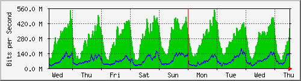
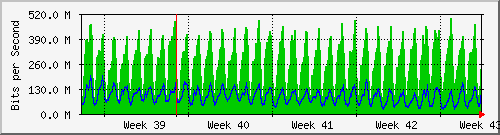
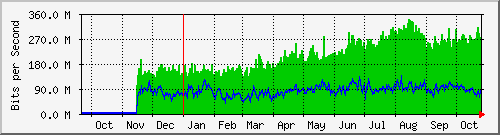

Traffic Analysis for Gi1/0/12 -- spider.sky
| System: | spider.sky in stoyka |
| Maintainer: | falcon@skyinet.org |
| Description: | GigabitEthernet1/0/12 Dlink-3120 |
| ifType: | ethernetCsmacd (6) |
| ifName: | Gi1/0/12 |
| Max Speed: | 1000.0 Mbits/s |
| Ip: | No Ip (No DNS name) |
The statistics were last updated Thursday, 26 October 2017 at 12:55,
at which time 'spider.sky' had been up for 8 days, 10:32:41.
`Daily' Graph (5 Minute Average)

|
Max |
Average |
Current |
| In |
512.2 Mb/s (51.2%) |
247.9 Mb/s (24.8%) |
308.2 Mb/s (30.8%) |
| Out |
176.6 Mb/s (17.7%) |
78.5 Mb/s (7.8%) |
128.9 Mb/s (12.9%) |
`Weekly' Graph (30 Minute Average)

|
Max |
Average |
Current |
| In |
543.8 Mb/s (54.4%) |
274.9 Mb/s (27.5%) |
374.0 Mb/s (37.4%) |
| Out |
182.1 Mb/s (18.2%) |
72.7 Mb/s (7.3%) |
135.6 Mb/s (13.6%) |
`Monthly' Graph (2 Hour Average)

|
Max |
Average |
Current |
| In |
494.3 Mb/s (49.4%) |
268.2 Mb/s (26.8%) |
232.8 Mb/s (23.3%) |
| Out |
197.3 Mb/s (19.7%) |
87.7 Mb/s (8.8%) |
122.1 Mb/s (12.2%) |
`Yearly' Graph (1 Day Average)

|
Max |
Average |
Current |
| In |
340.1 Mb/s (34.0%) |
181.4 Mb/s (18.1%) |
275.4 Mb/s (27.5%) |
| Out |
136.0 Mb/s (13.6%) |
71.1 Mb/s (7.1%) |
77.2 Mb/s (7.7%) |
| GREEN ### |
Incoming Traffic in Bits per Second |
| BLUE ### |
Outgoing Traffic in Bits per Second |